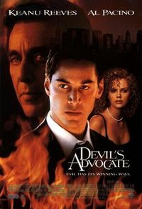
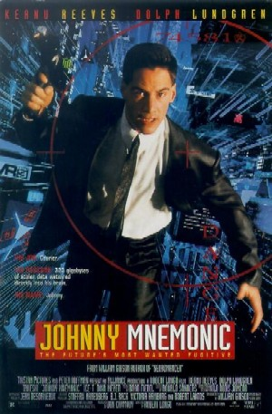

Кіану Рівз (англ. Keanu Reeves, нар. 2 вересня 1964, Бейрут, Ліван) — канадський актор, режисер, продюсер і музикант. Здобув популярність за виконання головних ролей у декількох блокбастерах, включаючи комедійну франшизу про Білла і Теда (1989—1991); трилер «На гребені хвилі» (1991), культовий бойовик «Швидкість» (1994) та «Джон Уік» (2014); психологічний трилер «Адвокат Диявола» (1997). Проте найбільшу славу Рівз отримав за виконання ролей Нео та Джона Костянтина в культовій науково-фантастичній франшизі «Матриця» (1999—2003) та в містичному трилері «Костянтин: Володар темряви» (2005)
Народився 2 вересня 1964 року в Бейруті (Ліван). Мати — Патриція — була англійкою, а батько — Самуель Ноунін Рівз (наполовину гаваєць, наполовину китаєць) — працював геологом (і не тільки), і тому родині доводилося багато подорожувати. За рік після весілля молодята переїхали до Австралії, де в них народилася дочка — Кім. Ще одна сестра Кіану з'явилася на світ у 1976 році.
У 17 років Кіану кинув школу і почав працювати, займаючись при цьому на курсах акторської майстерності.Екранний дебют актора стався в 1979 на канадському телебаченні. На початку 1980-х він знімався в рекламі (включаючи рекламу Coca-Cola) і коротких фільмах в Торонто. Потім Кіану вдалося перебратися до великого екрана, де його помітили після картини «Неймовірна пригода Білла і Теда»Всесвітньо відомим актор став після того, як знявся разом із Сандрою Баллок у фільмі-екшені «Швидкість» (Speed, 1994). За рік з'явилася провальна в американському прокаті фантастична стрічка «Джонні-Мнемонік» (Johny Mnemonic, 1995). Потім були картини «Відчуваючи Міннесоту»[en] (Feeling Minnesota, 1996), «Адвокат диявола» (Devil's Advocate, 1997). У 1997 посів 23 місце у журналі Empire у списку «Найкращі 100 кінозірок всіх часів». І нарешті, у 1999 році, після успіху «Матриці» (The Matrix, 1999), Рівза зарахували до числа «культових» акторів.




Кіану — вегетаріанець.Його зріст — 1,86 м.Його ім'я означає «прохолодний вітерець над горами» на Гаваях. Рівз є пристрасним мотоциклістом та вболівальником мотоспорту. Так, лише у 2015 році він особисто відвідав два Гран-Прі серії MotoGP — у Остіні та Муджелло. Також він є співзасновником компанії «Arch Motorcycle Company», яка з 2013 року будує мотоцикли на базі Harley-Davidson та продає за ціною 72 тис. €. У травні 1993 року заарештований у Лос-Анджелесі, Каліфорнія; звинувачений у п'яному водінні.[22] Кіану любить бальні танці. Вибраний журналом People як один із 50 найкрасивіших людей у світі (1995).